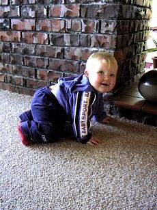
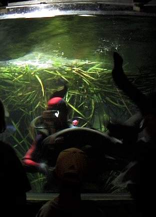

釣行日誌 ＮＺ編 「その後で」
ウェストランズ・ウォーターワールド
1999/12/15(WED)-2
タイイングの道具を片づけていると、町内に住んでいるトロレー夫妻の長男のジャスティン君が赤ちゃんを抱いてやってきた。夫妻にとっては待望の初孫である。
いやぁ、初めまして。どうもどうもなどとあいさつを交わしたのであるが、ジャスティン君は電子メールが使えるので、昨年の釣行以来ブリントさん宛の連絡事項を彼の所に送信したりして、パソコンの上ではやりとりをしていたのである。さすがにトライアスロンの選手だけあって２５歳の体躯はいまにもどこかへ走り去ってしまいそうなエネルギーを充満している。日頃はインラインスケートを履き、スピードの出るニュージーランド名物の三輪ベビーカーで赤ちゃんとともに毎日数時間のトレーニングしているとのこと。
赤ちゃんのコナーちゃんは八ヶ月。まるまるとしたほっぺが可愛らしい男の子である。落語の「子誉め」ではないが、ここニュージーランドでも赤ちゃんを誉めるのは難しく、
「ハンサムなぼっちゃんですねぇ！」
などと苦労して単語を並べて話しかけても、
「ええ、彼女はとても愛想がいいのよ。オホホ」
などと、お母さんから微笑みで逆襲されたりするのである。
コナーちゃんは周囲の物体にハイハイによる果敢な接近を繰り返し、老猫のブラッキーのヒゲから見慣れぬ日本人の危うい生え際から植木鉢からテーブルの足から暖炉のレンガに至るまで手当たり次第にさわりまくるのであった。

と、その暖炉のレンガがどうにも特別に魅力的な陰影をたたえており、どこにでもあるような普通のレンガには見えなかったので、ホキティカ空港の辣腕マネージャーから一転してやさしいおばあちゃんに変貌しているグレースに聞くと、
「ああ、それはブリントが鏨ではつったのよ。家中で五千個ぐらいあったかしら？」
柔らかな白い絨毯に、コナーちゃん、黒猫のブラッキーとともに寝転がりながら、五千個の煉瓦をこつこつと無言ではつり続ける若き日のブリントの姿を想い、私は、無言で頷いた。
夏の午後は日が長い。まだたっぷりと時間はあるので、町を見下ろす丘の上の家からトコトコと小径を下り、時計台のある町の中心部を目指す。これからホキティカの町がニュージーランド全土に自慢する Westland's Waterworld を訪れるのだ。
昨年来たときにはオーストラリアから移住してきたという女の子が受付をしていたのだが、今年は代わりに破顔一笑・オレンジの輝き！ というような微笑みをたたえてララという女の子が出迎えてくれた。
「こんちは」
「ハーイ！ ははぁ、あなたがゴウね」
「ええ、そうですけど」
「今日はブリント何してた？ ぐーたらしてなかった？ ちゃんと働くように言っておいてね」
などと、笑顔の向こうから辛辣な批評が飛び出してくる。どうしてこんなにトロレー家のことをよく知っているのかと不思議に思ったのだが、よくよく聞いてみると、なんと彼女はジャスティン君の奥さんなのであった。ということは、すでにグレースとララの女性連合・共闘が緊密に形成され、ブリントの立場も日々縮小と下降とを続けているようであった。やれやれ。
「今日はちびっ子たちが大勢来るからこれから忙しくなるわ。 また後でね」
と、カウンターの向こうに彼女は消え、私は薄暗い水族館の中に一人、大ウナギやらホワイトベイトの姿を求めて歩み込んでいく。
ウェストランズ・ウォーターワールドは1995年に開館した水族館であり、南島西海岸の原生林の渓流・湖沼に生息する珍しい淡水魚類が見られることで、生態系や自然環境などの研究者の間でも評価が高い。水族館というと日本の「海遊館」とかを想像する方にはあらかじめお断りしますが、建物の規模とか運営予算で言えば、
「うふふ」
と笑ってしまうスケールなのである。
が、しかし、ここのお勧めはなんといっても大ウナギが群泳する巨大円形水槽であり、毎日10時と３時には、飼育係の若者がアクアラングを着用してウナギの群れの中に入れてもらい、冷凍のイカなどを与えるショーが催されるのである。ちょうど時間は３時となり、しっかりとステンレス製の網手袋をはめた彼が梯子を降りて水槽に入ると、待ちきれなくなった20尾以上のウナギ、平均体長1.5m、平均体重20kgほどの黒くうごめく棍棒たちがいそいそゆらゆらとにじり寄ってくるのである。

「うーん、今日は夢でうなされそうだなぁ」
などとおののきながらも、故郷の父のことを想った。親父はウナギ釣りの名人（キチ）であるからして、もしこの水族館を訪れたら血圧が上がってしまうこと必至なのであった。
などと夢想していると、ちょうどショーに間に合うように入ってきた地元の小学生の一団が水槽を取り囲み、
「ヤァック.....（気味悪ゥ）」
とか、
「ここでは泳ぎたくなーい！」
などとにぎやかである。アタシなんかこれで４度目だもんねェ、というリズちゃんは、子供用の踏み台として配備されている牛乳ケースをしっかり自分専用に持ち歩き、あちこちの水槽を覗き込んでいる。
大ウナギの水槽の周りは小ウナギ（日本のウナギのサイズ）やホワイトベイトとその親魚たちである。ホワイトベイトとは、Galaxiidae科の淡水魚数種の幼魚がこう呼ばれており、ニュージーランドではその美味しさで知られているのである。特に南島西海岸産のホワイトベイトは有名であり、オークランドで買うと1kgが６千円ぐらいする高級魚である。また、このホワイトベイト漁は早春に行われ、ウェストコーストの住民にとっては、生活の基盤とか、宗教の一部とか言われるほど大切なイベントなのである。
ホワイトベイトの生態は、これまであまり知られていなかったのだが、親魚は渓流で生活し、産卵のために汽水域の湿地に下り植物の根付近に卵を産み付け、仔魚は海で成長して早春に河口から遡上するようである。ここニュージーランドでも汽水域の微妙で脆弱な生態系は土地改良などで失われつつあり、その保全に取り組む運動が展開されている。
ホワイトベイトの水槽には、ワカサギほどの大きさで、やや透明感のある魚影がすいすいと動き回っている。また、となりでは、親魚であるココプという魚が堂々と泳いでいる。体長26cmほどのこの魚は、顎の短いショートジョーココプという種であり、非常に珍しい淡水魚だそうである。
海水の魚たちはささっと見終わり、子供たちが歓声を上げて群がっているクィンナットサーモン（キングサーモン）の池を覗く。40～50cmほどのサーモンが、子供たちが撒く餌のペレットにジャバジャバとライズしている。しかし、日本の養魚池のニジマスとは違いさすがに警戒心は強く、餌が無くなるとササッと物陰に隠れる。この池のどこかに80cmぐらいのブラウントラウトがいるそうだが、あいにく奥の物陰に隠れているようであった。
また、この池では７ドル払うと竿と餌を貸してくれてサーモンを釣ることができ、見事釣り上げた人には免許皆伝の証書を発行してくれる。釣り上げた魚は係の人がさばいてくれて真空パックに包装してくれるので、家に持ち帰ることができる。また、地元のレストランに持ち込めば料理してくれるとのこと。
小銭入れに７ドル分のコインを探す手を諫めつつ、受付まで戻ると、ララが、アンケートに答えてね、と一枚のシートを手渡したので、子供たちに混じって解答を書き、彼女に渡す。
ホワイトベイトの一生がわかるビデオを作成して欲しい
との希望を書いておいた。
釣行日誌ＮＺ編 目次へ
サイトマップ
ホームへ
お問い合わせ